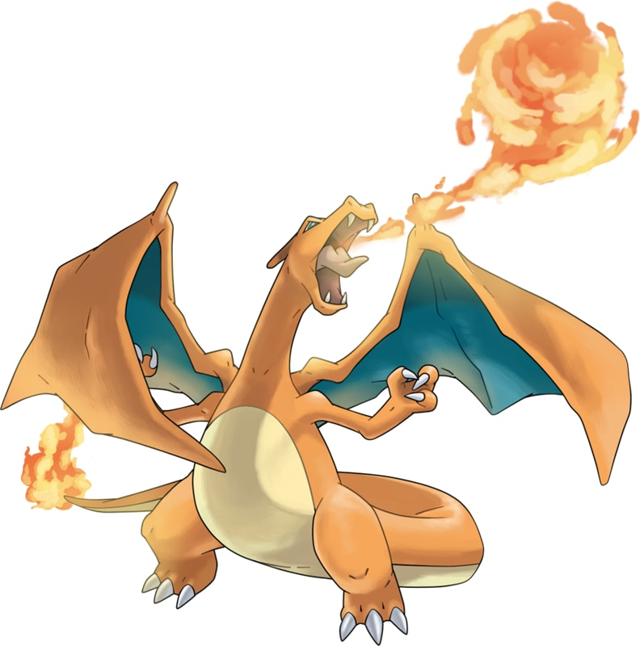

| Home | Introduction | Dictionary | Video | Map |
|  | |
| Type | Ability |
| Fire | Solar Power |
| Height | Weight |
| 5'07" | 199.5 lbs |
Charizard is a draconic, bipedal Pokémon. It is primarily orange with a cream underside from the chest to the tip of its tail, which burns with a sizable flame. Charizard has a long neck, small blue eyes, raised nostrils, and two horn-like structures protruding from the back of its rectangular head. There are two fangs visible in the upper jaw when its mouth is closed. Two large wings with blue-green undersides sprout from its back, and a horn-like appendage juts out from the third joint of each wing. Charizard's arms are short and skinny compared to its robust belly, and each limb has three white claws. It has stocky legs and cream-colored soles under its feet.
As Mega Charizard X, its body and legs appear more physically fit, though its arms remain thin. Its skin turns black with a sky blue underside extending from the lower jaw to the tip of the tail. Two spikes with blue tips curve upward from the front and back of each shoulder, while the tips of its horns sharpen, turn blue, and curve slightly upward. Its brow and claws are larger, its snout is shorter, and its eyes are now red with white pupils. It has two small, fin-like spikes under each horn and two more down its lower neck. The lower trims of its wings are divided into large, rounded points and each third joint is adorned with a claw-like spike. Mega Charizard X breathes blue flames out the sides of its mouth, and the flame on its tail now burns blue with increased heat.